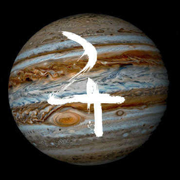
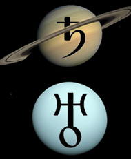

Cortando caminho pela floresta ao sul, os heróis acabaram por encontrar uma tribo de nativos desconhecidos, que confundiram Akriloth com algum mito ou criatura sobrenatural. Após ter problemas com esta turminha do barulho e entrar numa confusão da pesada, uma pequena menininha misteriosa trazia consigo integrantes da misteriosa ordem religiosa já temida pelos heróis - e, para congelar-lhes as espinhas e corações, um homem vestido com um robe simples trazia O CORVO! Sim, o corvo antes invocado pelo mago, a única dica ou guia dos heróis nestas terras misteriosas e desconhecidas... Além do mais, o mago e sua casa haviam desaparecido sem deixar rastros. A única esperança do grupo estava como que hipnotizada, manipulada, escravizada por um poder oculto desconhecido - os olhos do corvo brilhavam dourados, e o homem usava a criatura mágica para impressionar mais ainda os nativos...
Dio diz:
- Galera... Acho que deu ruim. - diz em um tom seriosamente preocupado
Cerea diz:
- Acho que se matarmos aquele homem, o corvo será libertado - sussurra
Dio diz:
- Cê deve estar de brincadeira... Olha quanta gente lá. - o_o
Akriloth diz:
- Vamos continuar observando, quem sabe podemos ver uma oportunidade. - olhos fixos no corvo e no homem com o robe
O homem parece manipular completamente o corvo através de uma magia poderosa. Faz com que ele voe e impressiona os nativos. A menininha sorri, e Dio, como sempre, continua a ouvir as mensagens que ela envia a todos:
diz:
- "Viram? Estes são poderes divinos. Vocês devem seguir-nos para que sejam abençoados!"
Dio diz:
- Aquela menina está pregando Deus para os nativos...
Cerea diz:
- O próprio grupo tem 5 pessoas... Acho que se eles se separarem da tribo, podemos emboscá-los, matar o captor do corvo e fugir
Akriloth diz:
- E se criarmos uma distração? Ou algo do tipo
Dio diz:
- M-Mas e quanto a nossa missão principal?
Cerea diz:
- Somos muito poucos. E não conseguiremos completar nossa missão sem o corvo.
A tribo convida, de forma hospitaleia, aquele grupo para adentrar sua aldeia na floresta. Eles estão indo agora mais para dentro da floresta, uma região que ainda desconhecem.
Cerea diz:
- Vamos segui-los!
Cerea segue o grupo e a tribo, ainda na espreita
Akriloth segue-os, furtivamente
Dio se pergunta se seu companheiro dragão seria de alguma ajuda
Dio diz:
- Eu não tenho escolha, né? - =_=, vai logo atrás dos dois
Cerea - Teste de Destreza - DIFICULDADE 10
Akriloth - Teste de Constituição - DIFICULDADE 10
Dio - Teste de Sabedoria - DIFICULDADE 15
• Cerea rolou 1d20 e tirou 1 + 4 = 5
• Dio rolou 1d20 e tirou 20 + 4 = 24
• Akriloth rolou 1d20 e tirou 17 + 3 = 20
Cerea anda de forma um pouco desastrada, e, com a espada em mãos na frente, acaba por dar de encontro com um poderoso campo de energia que a expulsa com força. Com azar, a espada fica dentro, enquanto que seu corpo foi arremessado para alguns metros de distância. Contusão 1d4. Enquanto isso, Akriloth é afetado pelo mesmo campo, mas sua constituição física avantajada o impede de sofrer quaisquer ferimentos, simplesmente não conseguindo ir adiante - uma força invisível o impede de continuar. Dio, todavia, sente intuitivamente que um feitiço selou o local e impediu a entrada tanto de artefatos como a espada de Cerea quanto seres do naipe de Akriloth...
Cerea diz:
- Agh, o que foi isso?
Akriloth diz:
- Mas o que é isso? Era só o que faltava...fanáticos religiosos fazendo merda numa floresta.
Dio diz:
- Algo me diz que você deveria passar, Cerea, não sua espada.
Dio diz:
- Já você, Akriloth, não passará nunca.
Cerea diz:
- Então por que minha espada ficou lá dentro? - questiona enfezada
Dio diz:
- Isso, já não sei responder. Provavelmente é uma barreira divina que mantém as coisas malignas de fora.
Cerea diz:
- Bem, então vou tentar entrar novamente - vai até a espada
Dio tenta atravessar o campo supostamente invisível
Dio consegue com facilidade
Cerea é empurrada por uma tremenda força mágica novamente
Dio - Teste de Sabedoria - DIFICULDADE 12
• Dio rolou 1d20 e tirou 8 + 4 = 12
Cerea é empurrada para fora do campo e cai ferida. Enquanto isso, Dio escuta a voz da garota, agora apenas em sua mente:
diz:
- "Não ousem interromper." - apenas isso
Dio diz:
- Pode me ouvir pelo menos uma vez antes de tentar ir avançando pra cima de tudo com uma confiança nada confiável? - especialmente para a centaurida
Akriloth diz:
- E o que faremos então, gênio?
Cerea diz:
- Então fale ao invés de só ficar olhando ,oras
Dio diz:
- Aquela garota, tem algo perturbador nela. Ela fala, mentalmente, comigo... E diz para não ousarmos interromper. - leva a mão esquerda no queixo, pensativo
Cerea diz:
- Ah, mas eu vou interromper é o crânio dela ao meio! - pega o martelo e passa de novo pelo campo
Dio diz:
- Contudo, não gosto nada do que está acontecendo aqui. Vocês dois terão problemas com essa barreira. A menos que abandone sua espada e o demônio fique para trás, terei de ir sozinho... Ou podemos rumar cegamente pela floresta até nosso destino.
Dio diz:
- E-Eu sabia que era melhor ter ido pela estrada desde o início. - ~_~
Cerea diz:
- Eu não posso abandonar esta espada. Vamos acabar com essa barreira. Você consegue se comunicar com a garota pela mente?
Akriloth diz:
- Ela sabe seus movimentos, Dio?
Dio diz:
- Não sei e não sei. Só um instante.
Dio mentalmente: "Consegue me ouvir, garota?"
Dio se concentra mentalmente para invocar seu dragão
Akriloth diz:
- Não dá pra dar a volta nesse campo, será?
A rocha especial entre as pedras da funda de Dio começa a brilhar...
Dio diz:
- Menatrasz, eu escolho você!
Após um brilho, o dragão é invocado, e surge ao lado de Dio... porém, com algo errado: seus olhos brilham dourados e ele parece não atender mentalmente a seu companheiro ranger - pelo contrário - imediatamente após sua invocação, começa a andar na direção da menina, entrando na floresta, ignorando completamente os heróis... parece estar vago, sonâmbulo ou algo assim.
Akriloth diz:
- Segure-o! Veja como ele reage
Cerea diz:
- Parece que isso aí não deu muito certo.
Dio http://orig02.deviantart.net/3b4a/f/2012/203/4/d/finn___adventure_time_by_xtopher88-d586t05.jpg
Dio diz:
- VOLTA AQUI! - segura o dragão para impedir seu avanço em transe
Teste de Força - DIFICULDADE 7
• Dio rolou 1d20 e tirou 19 + 2 = 21
Dio consegue, apenas pela força, manter o dragão ali, já que o impulso da criatura é o de seguir absolutamente a menina...
Dio diz:
- Ei, garoto! Acorda aí! - gentilmente dá palmadas na cabeça do dragão para ver se ele esboça alguma reação
OLHOS ABERTOS FIXOS QUE NEM PISCAM
Dio arrasta o dragão pra fora da área de efeito da barreira
De repente, o dragão desperta, e em um espasmo parece ter um pequeno ataque de epilepsia que dura alguns segundos
diz:
- O quê está acontecendo... não lembro de ter sido chamado... - diz mentalmente para Dio
Dio diz:
- Parece haver uma espécie de barreira mágica que controla a mente de animais mágicos como você.
Dio diz:
- O corvo de seu invocador, o mago misterioso, foi possuído... E estamos sem um guia oficial.
Akriloth diz:
- E parece que só tirando o corvo de lá vamos conseguir voltar a viagem.
Akriloth diz:
acho que homem trans
diz:
- E-Eu não lembro de nada... - diz para Dio
Dio diz:
- Vai dar tudo certo. - :D
Dio diz:
- Só preciso manter você seguro. Te chamo numa situação mais oportuna. - segura a rocha de invocação do dragão e o chama de volta, guardando a rocha logo em seguida
n-na verdade a rocha vira o dragão...
Dio então dismissa o dragão e guarda a rocha que o mesmo vira
Dio diz:
- ESTAMOS PERDENDO TEMPO! - tem um surto louco e sai correndo na direção para onde os cultistas e os nativos se direcionaram
Akriloth fica....parado lá, esperando os cara voltar
os heróis deparam-se com uma especie de ritual - os nativos fizeram um círculo a adorar os cavaleiros e cultistas, que estão no centro. Exatamente no meio, aquele homem misterioso, que segura uma criança nativa em sua mão, e um punhal na outra... os nativos estão ajoelhados reverenciando-o, enquanto ele prepara-se para sacrificar o menino...
Dio furtivamente mira uma rocha no cultista e arremessa com a funda
? Seja um pouco mais específico. Há dois cultistas, dois cavaleiros sem cavalo, o homem misterioso e a menininha. Você mirou em quem exatamente?
Dio mira no homem misterioso prestes a apunhalar o menino
Cerea pega seu arco e faz o mesmo que Dio
Dio diz:
- Cerea, a coisa vai ficar feia agora. Se prepara. - diz enquanto gira a funda e realiza o arremesso
Cerea dispara ao mesmo tempo
diz:
- Resistir é fútil. - Cerea e Dio ouvem a voz da menina em suas cabeças... TESTE DE DESTREZA - DIFICULDADE 15 AMBOS
• Cerea rolou 1d20 e tirou 1 + 4 = 5
A flecha perfura a criança, a assassinando instantaneamente...
• Dio rolou 1d20 e tirou 1 + 4 = 5
O pobre bebê nativo ainda leva uma pedrada poderosa na cabeça, que acaba por arrancada... está decapitado...
Dio diz:
- Eu não pedi por isso... - fica inerte com a cena
Cerea pega outra flecha rapidamente e a dispara no homem misterioso
Dio diz:
- A gente vai chamar muita atenção assim! - muda de posição e se esconde em meio as árvores
Todos se assustam absurdamente com a situação. De fato, a tribo está completamente traumatizada. Ao mesmo tempo, o homem misterioso permanece absolutamente sem nenhuma expressão (diferente dos cavaleiros, que agora parecem completamente enfurecidos, enquanto que a emoção dos cultistas é ocultada por seus capuzes longos. Lentamente, o homem misterioso começa a andar na direção dos heróis, temendo nada. (não ajam)
• Cerea rolou 1d20 e tirou 4 + 4 = 8
• Dio rolou 1d20 e tirou 2 + 4 = 6
• Guardião rolou 1d20 e tirou 9 + 7 = 16
Guardião seus olhos brilham em luz dourada, e se aproxima lentamente, com a maior calma e segurança do mundo, andando na direçao dos heróis...
Cerea atira uma flecha no homem
• Cerea rolou 1d20 e tirou 14 + 4 = 18
Guardião segura sua flecha
• Guardião rolou 1d20 e tirou 10 + 7 = 17
• Cerea rolou 1d6 e tirou 2
A flecha entra na palma da mão do guardião e sua ponta sai pelo outro lado, mas ele não demonstra absolutamente nenhuma dor ou medo. De fato, sua expressão é a da maior serenidade já vista pelos heróis
Guardião diz:
- Aro... - parece estar se concentrando para algo... - Aro, aro, arO...
Dio depois de ver a cena se pergunta se lutar é realmente algo plausível. Ainda sim, arma uma rocha na funda e começa a girá-la, soltando-a na direção do inimigo misterioso
• Dio rolou 1d20 e tirou 12 + 4 = 16
Guardião recebe a pedra em sua testa, sem emoções...
Guardião inicia uma rajada de golpes
• Guardião rolou 1d20 e tirou 4 + 13 = 17
• Guardião rolou 1d20 e tirou 11 + 13 = 24
• Guardião rolou 1d20 e tirou 10 + 13 = 23
• Guardião rolou 1d20 e tirou 6 + 13 = 19
• Guardião rolou 1d20 e tirou 6 + 13 = 19
• Guardião rolou 1d20 e tirou 9 + 13 = 22
• Guardião rolou 1d20 e tirou 11 + 13 = 24
• Guardião rolou 1d20 e tirou 13 + 13 = 26
• Guardião rolou 1d20 e tirou 19 + 13 = 32
• Guardião rolou 1d20 e tirou 18 + 13 = 31
• Guardião rolou 1d20 e tirou 1 + 13 = 14
• Guardião rolou 1d20 e tirou 8 + 13 = 21
• Guardião rolou 1d20 e tirou 11 + 13 = 24
• Guardião rolou 1d20 e tirou 6 + 13 = 19
• Guardião rolou 1d20 e tirou 1 + 13 = 14
• Guardião rolou 1d20 e tirou 12 + 13 = 25
• Guardião rolou 1d20 e tirou 17 + 13 = 30
• Guardião rolou 1d20 e tirou 17 + 13 = 30
• Guardião rolou 1d20 e tirou 18 + 13 = 31
• Guardião rolou 1d20 e tirou 1 + 13 = 14
• Guardião rolou 1d20 e tirou 2 + 13 = 15
• Guardião rolou 1d20 e tirou 13 + 13 = 26
• Guardião rolou 1d20 e tirou 6 + 13 = 19
• Guardião rolou 1d20 e tirou 10 + 13 = 23
• Guardião rolou 1d20 e tirou 9 + 13 = 22
• Guardião rolou 1d20 e tirou 8 + 13 = 21
• Guardião rolou 1d20 e tirou 10 + 13 = 23
• Guardião rolou 1d20 e tirou 11 + 13 = 24
• Guardião rolou 1d20 e tirou 11 + 13 = 24
• Guardião rolou 1d20 e tirou 9 + 13 = 22
• Guardião rolou 1d20 e tirou 8 + 13 = 21
• Guardião rolou 1d20 e tirou 3 + 13 = 16
• Guardião rolou 1d20 e tirou 20 + 13 = 33
Guardião diz:
- Huh. - apenas no vento, para demonstrar seu poderio. Os nativos se assustam - OOOHHH - e, agora sim, ELE COMEÇA A CORRER NA DIREÇÃO DE VOCÊS
Dio sem pensar duas vezes monta em Cerea
Cerea sai galopando para fugir do guardião, tentando pelo menos ir na direção que vieram para chegar em Akriloth
Akriloth percebe os heróis vindo... todavia, não vê nada atrás deles. Por fim, eles atravessam o campo. Até lá correram sem olhar para trás. Agora, que já o atravessaram, não veem nenhum sinal do guardião.
Cerea diz:
- Ufa. Ele parou de nos seguir?! - começa a desacelerar até parar, e deixa Dio descer
Cerea tenta pegar sua espada
A espada era dentro do campo, você já saiu... ou quer voltar no tempo?
Akriloth diz:
- Que aconteceu?
Dio diz:
- D-desculpe a reação inusitada. - fica meio acanhado
Dio diz:
- Demônio! Um homem misterioso louco começou a dar centenas de golpes no ar! Demos no pé o mais rápido o possível!
Akriloth diz:
- Por favor, vocês estão exagerando, frangotes. Queria só ver se eu estivesse lá.
Cerea não percebe que não tem mais espada nenhuma lá
Cerea diz:
- Onde está minha espada?!
Cerea diz:
- Demônio, você viu o que aconteceu com ela?
OBS: VOCÊS ESTÃO FORA DO CAMPO TODOS
Akriloth diz:
- Não, para mim ela estava aí até agora
Cerea diz:
- Mas é um imprestável mesmo.
Cerea tenta voltar para onde seria o "campo" pra ver se a espada aparece
• rolou 1d20 e tirou 7 + 13 = 20
• rolou 1d6 e tirou 4 + 13 = 17
Ao sequer colocar a face para dentro do campo, Cerea se depara com o guardião, agora sem camisa, a encarando fixamente (só aparece enquanto ela olha para dentro do campo). Espinhas lhe condenam mas a ombreira esculacha.
diz:
(olha dentro, dentro do campo)
Cerea tenta ver se consegue enxergar sua espada, enquanto começa a dar passos para trás
Akriloth diz:
- Pfff. Tenho cara de babá de arma dos outros, porra? - cruzando os braços
se você der passos para trás sai do campo. Só tá com a cara lá. Se você quiser procurar a espada eu vou ter que fazer isso que você não quer que eu faça...
Akriloth diz:
- Tomar no cu ninguém quer.
Dio diz:
- Vamos... Embora.
Cerea fica zangada sobre a ideia de perder a espada que recebeu de seus pais quando começou a vagar, mas sai do campo e retorna ao grupo
Cerea diz:
- Malditos! - empina sobre as pernas traseiras e desce de volta jogando toda a força sobre os cascos dianteiros, com raiva
Cerea diz:
- Seu dragão pelo menos voltaria - responde Dio, ao mesmo tempo que deseja mentalmente que a espada fosse pelo menos sapiente
Dio diz:
- Tudo o que vai, volta. Você vai reencontrar sua espada... Quando for a hora. - pergunta à sua intuição qual será o caminho que o corvo os levaria
Akriloth diz:
- Vamos pegar o tal caminho tranquilo. Sem o corvo, vamos nos perder nesse cu de judas, eu disse JUDAS.
Dio lembra-se facilmente: o caminho era a poucos graus diferente do caminho da floresta para o qual a tribo conduzia...
Cerea diz:
- Quer saber? Que se dane. Do nada eu me meti em uma encrenca que eu quase morri e agora estou presa com vocês, e nada melhora. Eu vou deixar isso pra lá.
Cerea sai andando em uma direção aleatória, sem ligar pros dois
Em sua consciência desperta a importância daquela espada...
Dio diz:
- Ei, ei! - corre até Cerea e para na frente dela
Cerea mete o foda-se porque isso é metagame
Cerea empurra Dio pro lado
Akriloth diz:
- É assim que as coisas levam ao suicídio, e suicídio faz você ir pro inferno, e aí você ia ter que me aturar te torturando por toda a eternidade, queridinha :)
Akriloth diz:
- Isso, vai, daqui a algum tempinho vou estar juntinho com você, no inferno :)
Dio senta no chão e abraça os joelhos
Dio diz:
- Não tem mais volta. Não. Tem.
Dio diz:
- Sabe qual é? - se levanta - Eu vou atrás daquela espada. E vou ficar com ela pra mim.
Akriloth diz:
- Deixe ela ficar comigo, eu sei manejá-la melhor. - pisca pra Dio
Dio diz:
- Deveria considerar melhor suas atitudes!
Dio escuta, não em sua mente, mas em seu coração, a voz tão serena e sábia de sua deusa @ Se lhe derem um segundo, qualquer um pode desistir e fugir. Então apenas continue andando. Há algo que apenas você pode fazer para que este planeta azul não perca sua luz...
diz:
- Se lhe derem um segundo, qualquer um pode desistir e fugir. Então apenas continue andando. Há algo que apenas você pode fazer para que este planeta azul não perca sua luz...*
Dio arremessa uma rocha no traseiro de Cerea, visando provocá-la
Dio - Teste de Sabedoria - DIFICULDADE 10
• Dio rolou 1d20 e tirou 15 + 4 = 19
Cerea e Akriloth observam um fenômeno jamais presenciado, que cala tanto suas perguntas quanto suas falsas certezas - o peito de Dio brilha, revelando um símbolo não antes visto...
criso enviou uma Imagem Rápida:

Dio arremessa a rocha de forma errada, mas percebe que, com sua mente, consegue fazê-la desviar do caminho e acertar Cerea perfeitamente... jamais presenciou tal acontecimento
Cerea diz:
- O que diabos foi isso? - para
Akriloth diz:
- Mas o que....nunca vi isso
Akriloth diz:
- Como fez isso, drow?
Dio diz:
- Mas algo me diz que isso vem de dentro.
Dio diz:
- Preciso de vocês dois. Por mais que não nos demos bem e as circunstâncias não ajudem. Não tem como sair dessa se não cooperarmos. - deixando um pouco o lado apático e despreocupado e tentando buscar um pouco de foco, ISSO INCLUSIVE VALE PARA OS JOGADORES IRL
Cerea diz:
- E você quer fazer o quê? Pular lá na frente daquele guardião e ser destruído?
Akriloth diz:
- Estou ouvindo. O que sugere, Dio? Não posso entrar no campo aí.
Dio diz:
- Algo menos intuitivo e mais sábio. De nada adianta pular de cara no perigo e esperar que as coisas funcionem - empíricamente comprovado - E pelo que parece, o campo se move a medida que eles avançam.
Cerea diz:
- Não acho que esse campo mudou de posição.
Dio diz:
- Talvez tenha! - consegue sentir o campo ou foi apenas intuição do momento?
A intuição revelou a existência do campo, mas não é possível prever seus pontos ou delimitá-lo...
Dio caminha apressadamente na direção de onde o campo estava, querendo ver sua delimitação (se for possível isso)
TODOS - Teste de Constituição - DIFICULDADE 10
• Cerea rolou 1d20 e tirou 15 + 5 = 20
• Dio rolou 1d20 e tirou 1 + 2 = 3
• Akriloth rolou 1d20 e tirou 2 + 3 = 5
Uma ventania surge e impacta os outros dois heróis além de Cerea...
Teste de Constituição - DIFICULDADE 10
• Akriloth rolou 1d20 e tirou 11 + 3 = 14
• Dio rolou 1d20 e tirou 6 + 2 = 8
• Cerea rolou 1d20 e tirou 8 + 5 = 13
Um pequeno terremoto surge e impacta Dio. Akriloth resiste bem, enquanto que Cerea se equililbra com o vento também...
O peito de Cerea e Akriloth também brilham, revelando, respectivamente, os seguintes símbolos
criso enviou uma Imagem Rápida:

Teste de Sabedoria - DIFICULDADE 10 - TODOS
• Cerea rolou 1d20 e tirou 6 + 1 = 7
• Dio rolou 1d20 e tirou 9 + 4 = 13
• Akriloth rolou 1d20 e tirou 2
O terremoto e a ventania começam a tornar-se cada vez mais fortes... os heróis começam a desequilibrar-se e a serem jogados de um lado para o outro...
Cerea tenta correr para dentro do campo
Akriloth tenta se segurar em alguma árvore
Cerea percebe que o guardião não está mais lá. Todavia, sua espada se perdeu meio à ventania e terremoto... de longe, pode ver o guardião e os cavaleiros se atrapalhando com um grande tumulto... estão todos sendo atingidos pelos fenômenos
Dio se manobra como pode para dentro do campo
Dio se depara com o mesmo que Cerea
Dio diz:
- Não é sensato realizar um ataque... Mas ei, vocês dois tiveram um efeito semelhante ao meu!
Dio diz:
- Me pergunto o que seria...
Cerea diz:
- A espada! - começa a correr na direção que o grupo de inimigos havia ido, olhando o arredor para ver se encontrava sua espada
Teste de Destreza - DIFICULDADE 20
Dio diz:
- Akriloth, tente nos acompanhar de fora!
• Cerea rolou 1d20 e tirou 19 + 4 = 23
CEREA ENCONTRA SUA ESPADA ENTRE ESCOMBROS
Akriloth - Teste de Sabedoria - DIFICULDADE 10
• Akriloth rolou 1d20 e tirou 19
Cerea ergue a espada com a ponta para os céus
Cerea diz:
- HAHAHAHAHAHAHAHA - ri alto de felicidade
da árvore, Akriloth percebe que o campo está falhando - ora sim enxerga os guardiões, outrora não enxerga mais... O TERREMOTO CESSA. Com apenas a ventania, os cavaleiros começam a se reerguer...
Cerea volta na direção dos heróis
Akriloth diz:
- O CAMPO ESTÁ OSCILANDO!
Dio - Teste de Sabedoria - DIFICULDADE 10
• Dio rolou 1d20 e tirou 15 + 4 = 19
Dio consegue reestabelecer contato com o corvo e...
VOU TRANSFORMAR TODO MUNDO EM ESPECTADOR PRA NINGUEM ATRAPALHAR MINHA CINEMATIC
um cavaleiro acerta a árvore com seu machado, a cortando e derrubando Akriloth...
a tribo corre se espalhando entre as árvores da floresta... meteu o pé
um dos cultistas, assim como o guardião com a menina, desapareceram...
um cavaleiro está atrás de Akriloth e, o outro, no mesmo lugar onde o guardião antes estava, protege um cultista, que tem, em uma mão, o corvo, e, em outra, um feitiço que, conforme lê, torna o corpo do corvo cada vez mais transparente e sua conexão com Dio mais fraca... SEIS TURNOS PARA O FAMILIAR MORRER.
O cavaleiro 1 protege o cultista, enquanto que o segundo atacou Akriloth por trás com sua arma larga
• Cerea rolou 1d20 e tirou 11 + 4 = 15
• Akriloth rolou 1d20 e tirou 4 + 3 = 7
• Dio rolou 1d20 e tirou 6 + 4 = 10
• Cavaleiro 1 (CA: 16) rolou 1d20 e tirou 18
• Cavaleiro 2 (CA: 14) rolou 1d20 e tirou 10
diz:
1- Cavaleiro1
2- Cerea
3- Dio
4- Cavaleiro2
5- Akriloth
Cavaleiro 1 (CA: 16) avança com seu machado contra o torso de Cerea
• Cavaleiro 1 (CA: 16) rolou 1d20 e tirou 14 + 4 = 18
• Cavaleiro 1 (CA: 16) rolou 1d6 e tirou 4 + 4 = 8
Cerea - Teste de Sabedoria - DIFICULDADE 10
• Cerea rolou 1d20 e tirou 8 + 1 = 9
a ventania continua forte
Cerea se recupera do ataque do cavaleiro, e devolve na mesma moeda dando um golpe vertical com o espadão
• Cerea rolou 1d20 e tirou 7 + 5 = 12
Cavaleiro 1 (CA: 16) defende-se com seu escudo
Dio gira a funda e arremessa uma rocha contra o cavaleiro que defende o cultista
• Dio rolou 1d20 e tirou 13 + 4 = 17
• Dio rolou 1d8 e tirou 4
Cavaleiro 1 (CA: 16) é atordoado pela pedrada que leva na cabeça
Cavaleiro 2 (CA: 14) pega sua arma enrijecida e ataca Akriloth por trás
• Cavaleiro 2 (CA: 14) rolou 1d20 e tirou 10 + 2 = 12
Akriloth dá um soco na mão do cavaleiro que segura a espada, e com a outra dá um uppercut nele
• Akriloth rolou 1d20 e tirou 2 + 4 = 6
diz:
(pera ae, era a rajada de ataques?)
não avança até Dio apenas para continuar protegendo o cultista, que se empenha e destruir o corvo do mago... Cerea pode agir.
Cerea ataca de novo o cavaleiro 1
• Cerea rolou 1d20 e tirou 2 + 5 = 7
Cavaleiro 1 (CA: 16) diz:
- Patético.
Dio avança e o corta com um golpe horizontal do chakram
• Dio rolou 1d20 e tirou 19 + 2 = 21
• Dio rolou 1d8 e tirou 1 + 2 = 3
O chakram passa raspando por seu braço, o machucando... o cavaleiro está sangrando, mas permanece leal ao cultista, defendendo-o
Cavaleiro 2 (CA: 14) diz:
- ARO - ataca Akriloth com seu espadão
• Cavaleiro 2 (CA: 14) rolou 1d20 e tirou 3 + 2 = 5
Akriloth aproveita a falha do cavaleiro 2 e corre até o 1, aplicando-lhe uma spear
• Akriloth rolou 1d20 e tirou 18 + 4 = 22
• Akriloth rolou 1d6 e tirou 6 + 4 = 10
Todo o treinamento de monge do demônio não foi em vão - com concentração, ainda que sem poderes ou trevas, o demônio corre com todo o foco e energia reunidos - ao se aproximar do cavaleiro, salta aplicando-lhe a ombrada mais mortal e foderosa já vista neste jogo
Cerea fica impressionada quando o cavaleiro na sua frente é do nada atacado pelo demônio que dá um peixinho no ar e o derruba, então se vira pro cavaleiro sobrevivente e parte para cima com uma investida
• Cerea rolou 1d20 e tirou 6 + 5 = 11
Cavaleiro 2 (CA: 14) defende-se
Cavaleiro 2 (CA: 14) diz:
- CORRA! - manda o cultista correr, e logo sai a proteger sua guarda
Dio respira fundo por um momento enquanto gira uma pedra na funda, então a arremessa, e tenta comandar a rocha no ar (como havia feito sem querer em um momento anterior) de modo que passe pelo cavaleiro e acerte o cultista fugitivo
TESTE DE SABEDORIA - DIFICULDADE 15
• Dio rolou 1d20 e tirou 18 + 4 = 22
O CORVO É IMEDIATAMENTE LIBERTADO
O CAMPO PERDE TODAS AS SUAS FORÇAS
Cavaleiro 2 (CA: 14) diz:
- D-DROGA!...
Cavaleiro 2 (CA: 14) começa a correr
Dio diz:
- Acabem com eles!
Akriloth corre atrás do viadinho e dá uma joelhada na espinha dele
• Akriloth rolou 1d20 e tirou 19 + 4 = 23
• Akriloth rolou 1d6 e tirou 3 + 4 = 7
Cerea ataca o cavaleiro, conseguindo alcançá-lo
• Cerea rolou 1d20 e tirou 12 + 5 = 17
Akriloth concentra toda a sua energia em mais um golpe impiedoso - a espinha do cavaleiro é afetada e ele perde sua completa mobilidade...
• Cerea rolou 2d6 e tirou 8 + 5 = 13
por fim, Cerea o executa.
Akriloth diz:
- Porra, dava pra ter interrogado ele
diz:
- E-Eu preciso... - o corvo se comunica com Dio, enquanto levanta voo urgentemente...
Cerea diz:
- Interrogue o encapuzado.
Akriloth ked o encapuzado
está derrubado, de bruços no chão
Akriloth chega no cultista, roçando a giromba nas costas dele e sussurra:
Akriloth diz:
- Se você não responder as nossas perguntas, vou socar minha mão tão fundo no teu rabo que você vai sentir o gosto da minha manopla.
Akriloth se assusta ao roçar sua giromba nas costas do cultista - não há costas. Quer dizer... pelo menos é realmente isso o que surpreende o herói - ao tocar o robe, não se depara com absolutamente nenhuma carne, osso, ou nada físico... tudo que há é aquele grande traje ritualístico... O corvo não perde tempo - já anoitece, e assim que libertado tenta voar para guiar os heróis, porém, foi afetado pela magia do cultista - precisará de algum repouso... Os heróis estão no meio da noite no centro de uma floresta perigosa e desconhecida. O mistério do corpo do cultista inquieta os heróis com a constante sensação de perigo e de uma presença da qual não se pode escapar. CONTINUA.